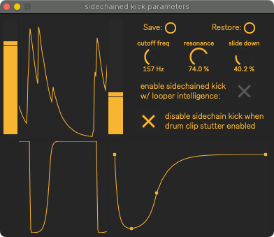

Kick Ducker¶
This allows the tuba to duck out of the way of the kick drum.
For this to work, SousaPlayback’s drum bus’s external output must be routed to SousaFX’s “drum tracks L/R” inputs.
{kind=link}
| enable sidechain kick with looper intelligence: | |
|---|---|
Available in the bindings as The ducker affects the loopers, delays & reverb, and main input separately. When this parameter is enabled, all three duckers are enabled, except for the main input’s when the looper status is “looping” or “fading out”. looper status - activated duckers:
|
|
| function: | Click and drag the points to change the volume envelope shape. clicks create points. shift-click deletes points. option-click-drag curves lines. |
| cutoff freq: | Sets the sidechain signal’s lowpass filter’s cutoff frequency. |
| resonance: | Sets the sidechain signal’s lowpass filter’s resonance. |
| slide down: | Sets the sidechain signal’s envelope’s fall time. |
| sliders: | The left slider sets the point at which the rising envelope will trigger the duck. The duck cannot be triggered again until the falling envelope passes the right slider. |
| disable sidechain kick when drum clip stutter enabled: | |
I must not’ve liked how the drum clip stutter sounded with the ducker enabled. |
|